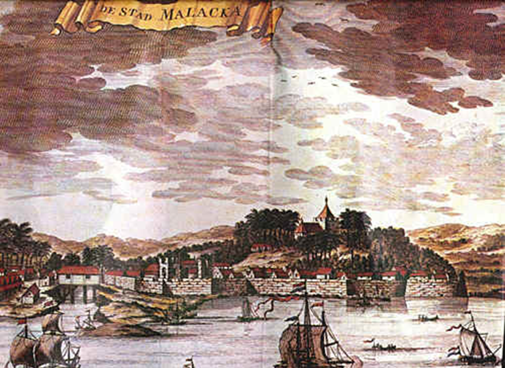
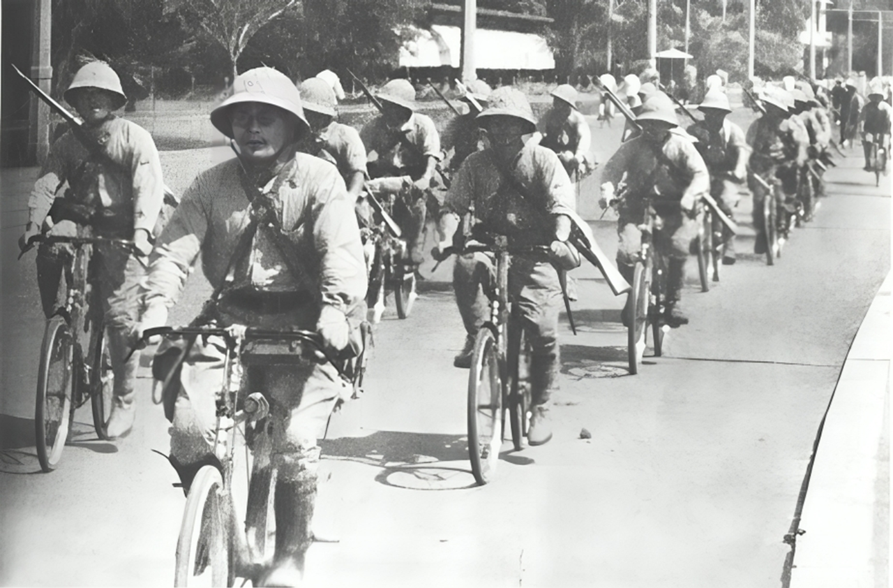
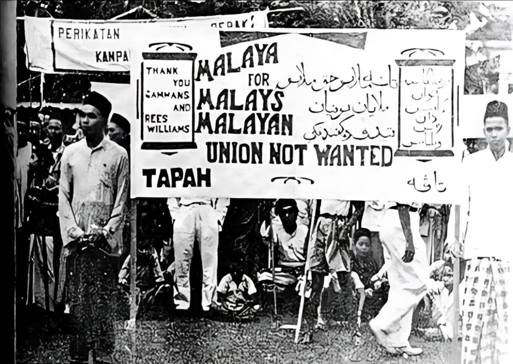
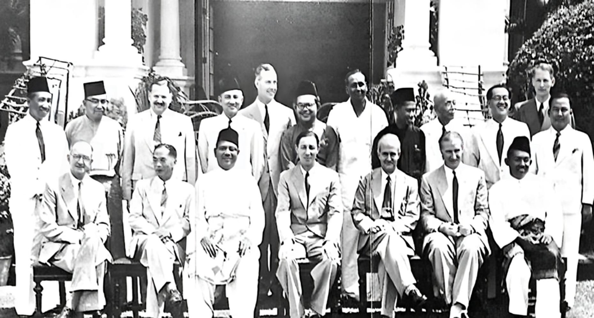
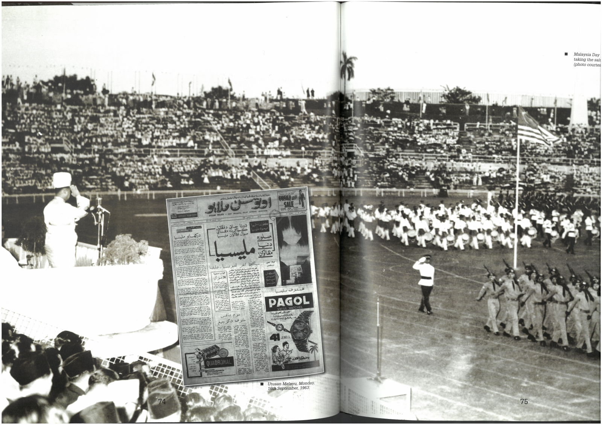

1511
Pada tahun 1511, Melaka jatuh ke tangan Portugis dan bermula dari tahun inilah Tanah Melayu berada dalam era penjajahan di mana Belanda menakluki Tanah Melayu pada tahun 1641 sebelum British mengambil alih pada tahun 1824.
1941-1945
Kemudian, Jepun menakluk Tanah Melayu pada tahun 1941 dan menduduki Tanah Melayu sehingga tahun 1945, setelah menyerah kalah ekoran pengeboman bom atom ke atas Hiroshima dan Nagasaki.
1946
British kembali ke Tanah Melayu pada tahun 1946. Pada 1 April 1946, British menubuhkan Malayan Union tetapi gagasan ini mendapat tentangan hebat daripada orang Melayu kerana ia menghapuskan institusi diraja dan hak keistimewaan orang-orang Melayu.
1952
New Straits Times Press.
Tunku Abdul Rahman Putra Al-Haj telah menaikkan semangat perjuangan penduduk Tanah Melayu untuk mendapat kemerdekaan dengan pembentukan Parti Perikatan (UMNO dan MCA) pada 1952. Ini merupakan detik permulaan pihak British menyedari kemungkinan besar penduduk Tanah Melayu boleh mentadbir negara mereka sendiri.
1955
Kemungkinan ini menjadi kenyataan pada tahun 1955 apabila Parti Perikatan yang kini juga melibatkan MIC menang besar dalam pilihanraya 1955. Ini membawa kepada kejayaan Perjanjian London yang ditandatangani pada 8 Februari 1956, sekaligus memberi petanda bahawa Persekutuan Tanah Melayu akan merdeka pada 31 Ogos 1957.
1963
Original photo:NSTP (RCHC), Newsclippings:Utusan Melayu, 16 September 1963
Perjanjian Malaysia telah ditandatangani pada 9 Julai 1963. Menerusinya, Sarawak, Sabah dan Singapura membentuk negara baharu dengan Tanah Melayu berkuatkuasa 16 September 1963.